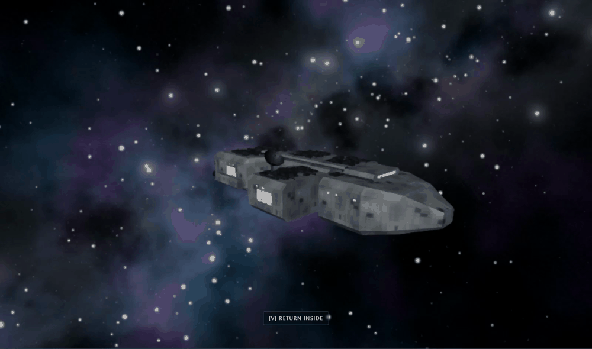
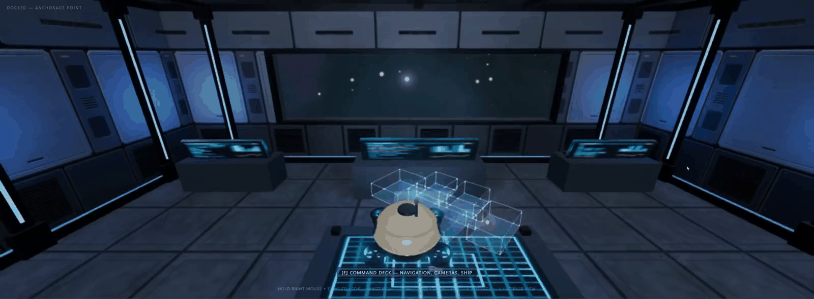
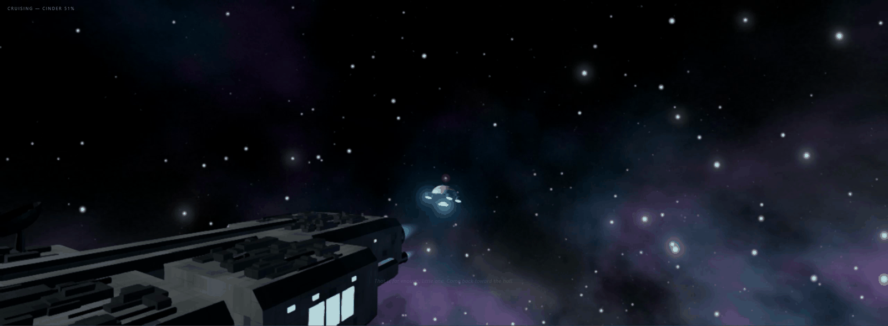

Build in Public, Day 3: Swapping Models and Branching for Experiments
Here’s a quick update on DRIFT, my “learning feels like playing” space game. On Day 2 the drone got a ship dashboard. Today the ship and the drone both got a makeover, and I picked up two lessons about building with AI.
Watch the demo
What’s new
A new ship skin. The RV Drift is now a plated, lived-in freighter with lit windows, a radar dish and glowing engines.

A new drone skin. The drone has a blinking eye, tilting thrusters and an antenna beacon.

A flight limit. There’s now a limit on how far the drone can fly from the ship. If you stray too far, its antenna glows red and starts beeping, and the beeping gets faster the closer you get to the edge.

What I actually learned
1. Repeatability across models
I started DRIFT with one Claude model and switched to another today. I wanted to see whether a different model could pick up the project and keep building it the same way.
It could, because the plan, the architecture and the build log were all written down. The new model didn’t need to guess what I meant. It read the same documents and carried on.
2. Branching for experiments
Every working version now gets a checkpoint, and every wild idea gets its own branch. If an experiment flops, I throw the branch away and the game is still fine.
That makes it much easier to say “let’s just try it”.
Status
- Fly the drone out through a window, see the new ship from the outside, and hear the alarm when you push the limit: ✅ working
- The new skins stay on an experiment branch until I’ve played them properly
Get involved
I’m planning to open source DRIFT. If you’re interested, send me a DM on LinkedIn.
And if you’re into NBA analytics, come say hi on my YouTube channel, NoFlightZone.